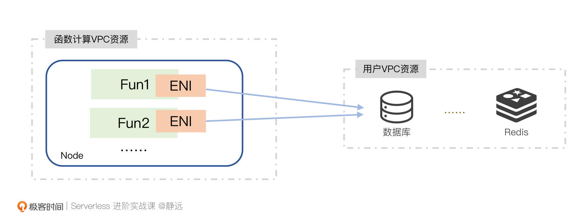
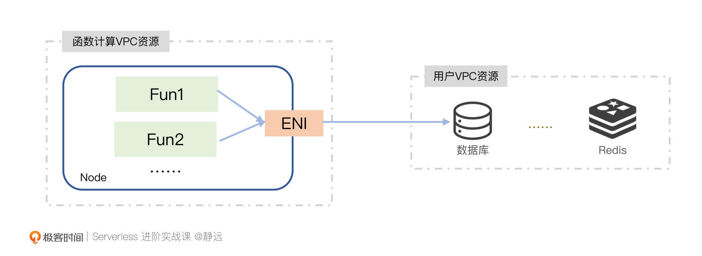
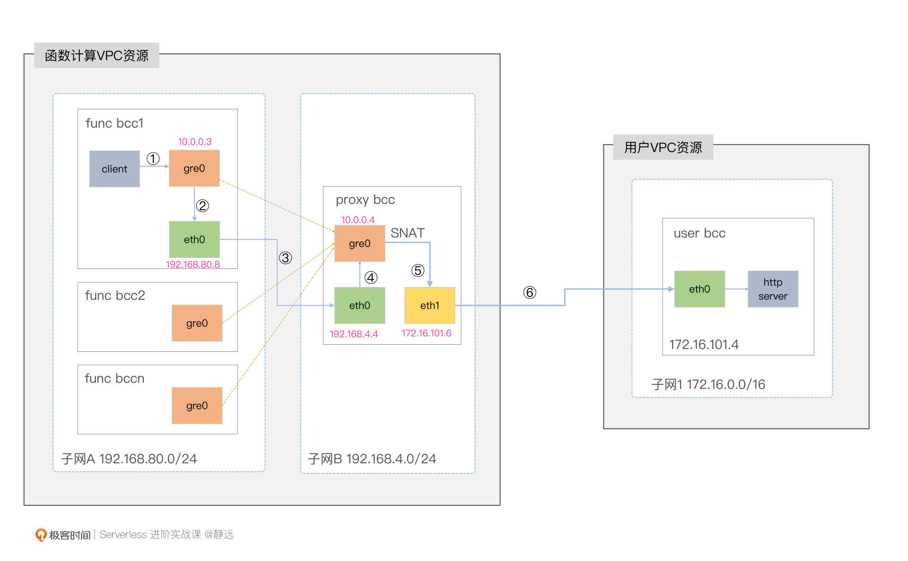
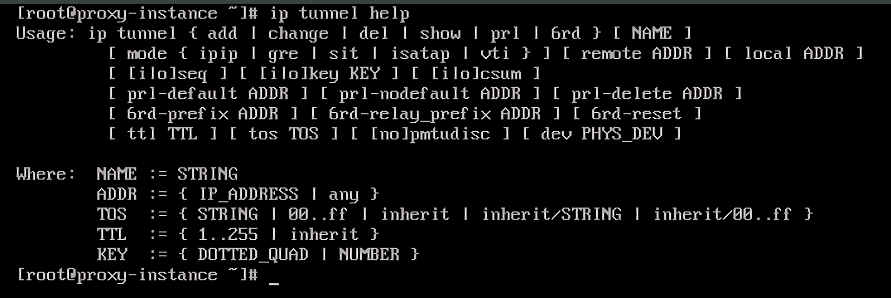
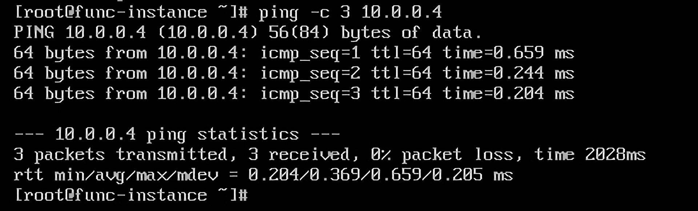
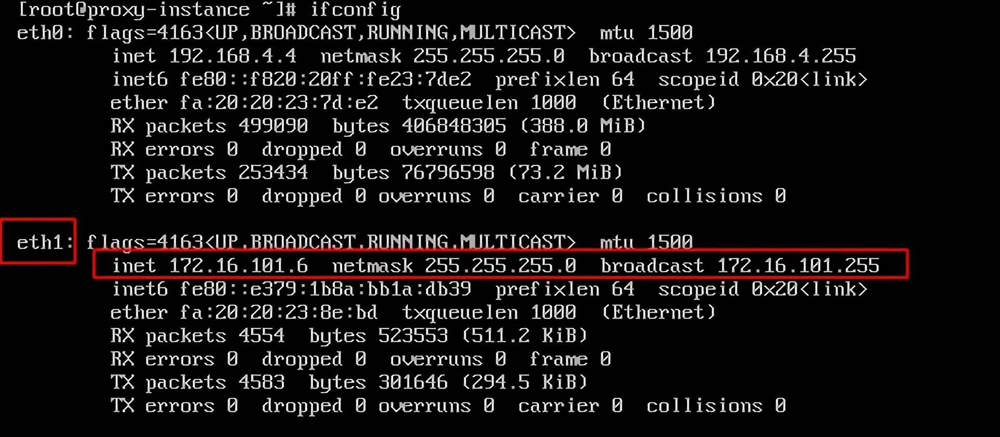
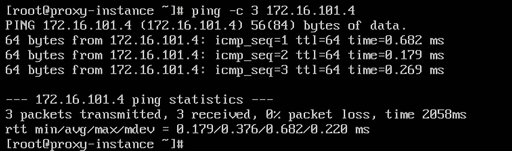
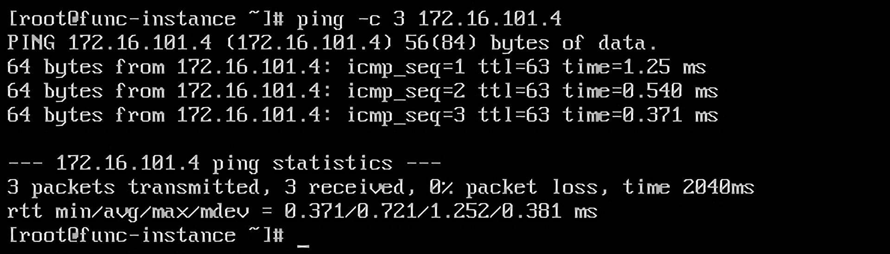
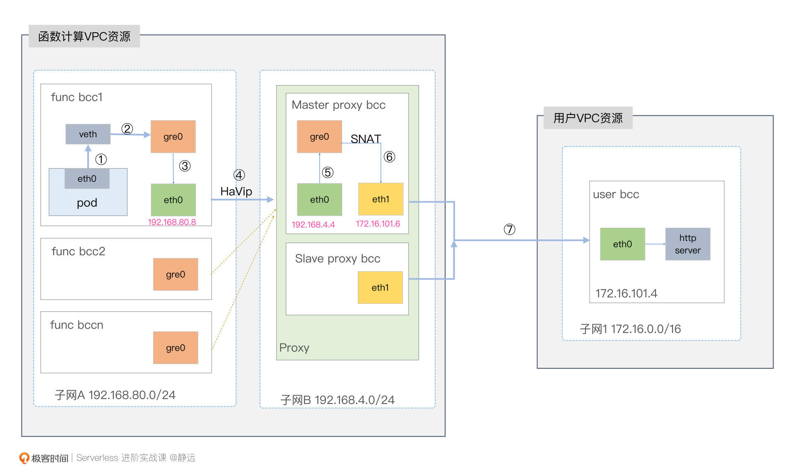

- 00 开篇词 Serverless是降本增效浪潮下的必然选择.md.html
- 00 思维构建 如何在新赛道下进阶Serverless能力？.md.html
- 01 生命周期：函数计算的基本流程是如何执行的？.md.html
- 02 触发器：如何构建事件源与函数计算的纽带？.md.html
- 03 高级属性：应对生产级别的应用，你需要掌握哪些技能？.md.html
- 04 冷启动：如何加快函数的第一次调用过程？.md.html
- 05 扩缩容：如何应对流量的波峰波谷？.md.html
- 06 流量转发：函数在不同情形下是如何执行的？.md.html
- 07 运行时（上）：不同语言形态下的函数在容器中是如何执行的？.md.html
- 08 运行时（下）：不同语言形态下的函数在容器中是如何执行的？.md.html
- 09 小试牛刀（一）：如何利用函数之间的调用解决业务问题？.md.html
- 10 小试牛刀（二）：如何突破VPC网络的速度限制？.md.html
- 11 WebIDE：如何让函数远离繁琐的本地开发模式？.md.html
- 12 编排：如何协调多任务的运行？.md.html
- 13 可观测（上）： 如何构建多维度视角下的Serverless监测体系？.md.html
- 14 可观测（下）： 如何构建多维度视角下的Serverless监测体系？.md.html
- 15 选型：不同阶段的数据应如何存储？.md.html
- 16 动手体验（一）：如何实现业务高效率地开发上线？.md.html
- 17 动手体验（二）：如何在云函数场景下实现一个有状态的服务？.md.html
- 18 实战指南：Serverless沙场老兵的一线使用经验.md.html
- 19 实战进阶（一）：Serverless “连接器” 的能力到底有多大？.md.html
- 20 实战进阶（二）：如何基于智能音箱开发一个BOT技能？.md.html
- 21 实战进阶（三）：传统的服务如何迁移到Serverless平台？.md.html
- 22 私有云：赛马时代的Serverless核心引擎谁能胜出？.md.html
- 23 实战进阶（四）：如何从0到1进阶一个开源引擎？.md.html
- 24 实战进阶（五）：如何从Serverless引擎蜕变成一个Serverless平台？.md.html
- 结束语 在实战中把握事物本质，不断革新.md.html
- 捐赠
10 小试牛刀（二）：如何突破VPC网络的速度限制？
你好，我是静远。
在冷启动这节课里，我跟你聊到了影响函数第一次执行速度的因素有很多，其中一个关键因素就是：VPC网络的建联时间。
我们知道，VPC是云厂商提供给用户的一个安全隔离的网络环境，用户可以在VPC空间中部署自己的服务，如Redis、数据库、MQ等。而我们的函数通常是创建在函数专属的VPC中的。一个生产级别的函数服务应用，少不了需要和其他的资源和中间件打交道。那么，跨VPC之间的通信效率就显得尤为重要了。
今天这节课，我就针对VPC之间的通信效率，通过案例实操的方式，为你剖析函数在跨VPC上的技术要点。
希望通过这节课，能够让你得到一些在Serverless的实战和后续优化工作的启发，能举一反三地找到更多优化方法，进一步突破函数访问速度的上限。
跨VPC问题的演进
针对云上网络连接的方式，相信你已经了解到不少，如专线（高速通道）、VPN网关、对等连接等方式。这些方式，有的用来解决IDC和VPC的连接，有的用来解决VPC与VPC之间的互通。
这其中，对等连接的确可以解决函数跨VPC的问题，但我们试想一下，如果每个用户都通过这种方式来解决这种问题，那么平台每次都需要搭建两端的连接，并且还可能会遇到IP网段冲突的问题。这样的做法显然不具备普适性，成本也过高。
为此，针对Serverless的函数计算场景，我们通常会通过弹性网卡（ENI）的方式来打通。弹性网卡是绑定在云主机或者容器实例上的，也就是说，我们是通过弹性网卡ENI来关联用户的VPC和用户的设备实例，使得设备和VPC互通的。


但实际上，我们暂且抛开这两者在网络速率上的差别，不论是在容器实例还是在主机上，他们都会面临同样的问题。
- 冷启动耗时较长：弹性网卡这种虚拟化的资源，它的创建时间是避免不了的；
- 资源受限：正因为资源虚拟化，也就意味着要依赖于硬件的基本参数，受限于内核、CPU等因素，为此，几乎所有的云厂商都会限制VPC内弹性网卡的数量，也就从一定程度上导致了此方法的局限性；
- 资源浪费：由于容器或者主机上要绑定弹性网卡，也就意味着多个实例就得占用多个网卡资源，造成资源浪费。
我们可以看出，它们虽然解决了跨VPC的问题，但还是会带来性能和资源成本上的压力。那么，我们是否可以不创建这么多弹性网卡，探索一种共用的方式呢？通常我们立马能想到的方式，就是出口代理了。
什么是代理？
如何代理呢？我们可以了解一下它的整体流程。
简单来说，就是我们在函数计算的集群与用户的VPC之间添加Proxy Node，在Proxy Node上构建网卡（如eth1），网卡会提前在用户VPC所在的子网Subnet中创建，但租户的权限属于函数计算VPC。
有了弹性网卡，接下来就需要解决函数到代理节点的打通问题了，也就是在函数的主机和代理主机之间构建一条链路，将数据包传递过去，且保证源IP和目的IP保持不变。
我们通常采用的是隧道技术。隧道打通后，我们还得注意两件事情。其一就是在Proxy Node中多张网卡的转发处理；其二，由于函数通常以容器的方式运行，所以需要有一个容器网络转发的过程。
接下来，我将一步一步介绍它们是如何起作用的。
动手实操
这节课，我会通过一个打通跨VPC网络的实验案例，带你实现函数通过Proxy机器代理的方式访问用户VPC的资源的全过程。在这个案例中，我选取了百度智能云服务器BCC来进行实验。
在实验之前，我们需要准备两个VPC网段，模拟创建函数集群和用户集群，并在云上购买三台云服务器BCC，其中2台BCC在VPC1，另外1台在VPC2。下面这个图可以清晰的描述部署的逻辑：

隧道技术
准备工作完成之后，我们来看隧道技术。
什么是隧道？在网络中，隧道是一种使用网络不支持的协议，构建网络之间高效和安全的链接，实现在网络中传输数据的方法。
内核中的tunnel可以通过ip tunnel help看到，当前有五个：IPIP、GRE、SIT、ISATAP和VTI。

本节课，我们选择使用GRE（Generic Routing Encapsulation），它是IPIP（IP in IP）协议的更进一步版本，从官方的描述上来看，可以取代IPIP。隧道技术本身的概念和区别不是本节的重点。不过，如果感兴趣的话，你也可以通过我文末给的延伸阅读深入了解。
接下来我们来创建隧道，使得func bcc1和proxy bcc能通过隧道打通连接。我们先在func bcc1中执行如下命令来创建GRE隧道：
# 加载GRE模块
modprobe ip_gre
lsmod | grep gre
# 创建gre模式的通道tunnel，关联上IP并赋予虚拟本端IP为10.0.0.3
ip tunnel add gre0 mode gre local 192.168.80.8 remote 192.168.4.4 dev eth0
ip addr add 10.0.0.3 peer 10.0.0.4 dev mgre0
ip link set dev mgre0 up
在proxy bcc上执行如下命令来打通GRE隧道：
modprobe ip_gre
lsmod | grep gre
ip tunnel add mgre0 mode gre local 192.168.4.4 dev eth0
ip link set dev mgre0 up
ip address add 10.0.0.4/24 dev mgre0
ip neigh replace 10.0.0.3 lladdr 192.168.80.8 dev mgre0
最后，我们还可以通过ping命令来验证proxy bcc与func bcc1的GRE隧道是否打通。

到这里，我们隧道的打通任务已经完成一半了，下面，我们要看proxy bcc如何与user bcc打通。
转发技术
我们注意到，proxy bcc和user bcc是不在一个VPC集群内的。那我们要怎么解决这个问题呢？
构建的逻辑就是在user vpc下构建一个虚拟网卡eth1，而eth1，又隶属于proxy bcc下。这个方法，和我们在上面“跨VPC的演进”中讲到的“动态创建网卡”的方法是一致的。
这里需要说明一点，如果你是一个业务函数的开发者，可能云厂商没有开放相应的特权账号，没有创建弹性网卡的能力，实操不了，那么，这里你只要了解过程即可。如果你是云平台维护工作者，可以体验一下这其中的操作方式。
弹性网卡创建并绑定好后，我们会发现，有2个网卡存在于proxy bcc中。

我们通过ping命令，可以验证是否能够和user bcc打通。这里要注意，proxy bcc与user bcc可以互通是因为弹性网卡是基于user bcc所在的VPC的子网Subnet创建的，但租户还是属于proxy bcc。

打通之后，我们就需要用到转发技术了，也就是将func bcc1的数据包通过proxy bcc的请求到达user bcc。
首先，我们需要通过将ip_forward设置为1，开启proxy bcc的转发能力。
echo 1 > /proc/sys/net/ipv4/ip_forward
这里需要说明一下，出于安全考虑，Linux系统默认的是禁止数据包转发的。所谓转发，就是当主机拥有多于一块网卡时，其中一块收到数据包，根据数据包的目的IP地址将包发往本机的另一网卡，该网卡即会根据路由表继续发送数据包。
我们这里因为是eth0接收云主机的数据，通过eth1来发送出去，所以需要开启转发能力。当然，为了能让func bcc1的路由触达user bcc，我们还需要继续完善路由规则。
我们在func bcc1中通过ip route add命令添加一条到user bcc子网172.16.101.0/24的路由：
ip route add 172.16.101.0/24 dev mgre0
此时 func bcc1 访问 user bcc 172.16.101.4 仍然访问不通，在 proxy bcc 侧监听 eth1 流量可以发现，eth1 发往用户 VPC 的包的源 IP 仍是 func1 bcc gre0 设备的 IP 10.0.0.3，这个 IP实际只存在于我们 bcc 内部，因此用户 bcc 收到请求后，它的返回流量无法路由到这个 IP。
因此，我们这里需要在proxy bcc添加一条 iptables 规则，在 POSTROUTING 链里把从 eth1 出口的流量的源 IP SNAT 设置为 eth1 的IP 地址，即 172.16.101.4。
iptables -t nat -A POSTROUTING -o eth1 -j MASQUERADE
到这里，我们就可以在func bcc1中ping通user bcc了。

容器网络
在虚机上，我们已经操作体验一遍了，但通常我们的函数是在容器实例里面运行的 的，容器在访问用户vpc服务的时候，是存在一点差别的。我们也可以验证一下，会发现，pod 发起的请求正常路由到了 proxy bcc 下的 tunnel 设备，但是没有继续转发到 eth1 中。
为什么会出现这样的情况呢？通常是因为Pod的IP和我们在proxy bcc上构建的路由规则是不一致的。至于怎么解答，我先不做回答，你可以先思考一下。我们先来看一个概念：ip-masq-agent。
ip-masq-agent 是一个用来管理 IP 伪装的扩展，即管理Kubernetes集群节点中 IP 网段的 SNAT 规则。它以 DaemonSet 形式部署在Kubernetes的集群中，在每个节点上启动一个代理程序。代理程序通过配置 iptables 规则，再将容器流量发送到集群节点的 IP 和集群 IP 范围之外的目标时，就可以选择以容器自己的 IP 地址或伪装成节点的 IP 地址作为出向流量的源地址。
看完ip-masq-agent的解说，相信你已经有答案了。解决办法，就是把 Pod IP SNAT 设置成 gre0 设备的 IP，再转给 proxy bcc，再对 proxy bcc 隐藏 Pod的IP即可。
ip-masq-agent 的配置来自于 configMap，可以通过 kubectl edit cm 命令来查看或修改配置。
到这里，我们在Pod中也能访问user bcc的服务了。
高可用
如果我们要上生产环境，你还需要考虑服务的高可用。在我们这节课反复提到的案例图中，我只画了一个Proxy Node，用来实验还可以，但生产环境肯定是不够的。为此，我们需要为每个VPC/Subnet建立一对主备Proxy。主备Proxy要使用HaVip进行容灾切换。
HaVip是一种可以独立创建和释放的内网IP，可以与高可用软件（例如，KeepAlived）配合使用，搭建高可用主备服务，提高业务的可用性。
另外，从Serverless的角度看，你还需要依据函数访问的流量对Proxy Node进行自动扩缩容。当流量增大时，需要自动对Proxy Node进行扩容；当流量降低时，需要自动对Proxy Node进行缩容。
我们继续在上面的架构图上进一步完善一下，增加主备Proxy Node和容器Pod之后的架构示意图如下所示。

小结
最后，我来小结一下我们今天的内容。
这节课主要围绕着优化函数在跨VPC场景的访问速度来做讲解。我们学习了跨VPC打通的演进过程以及代理的四大要素，最后，也结合一个案例的实操过程，了解了函数代理技术的实现过程。
在演进过程的回顾里，我们会发现，对等连接由于其在函数计算上的构建不具备普适性，只有在极少数大客户的场景下会使用。而弹性的网卡实时创建，虽然具备一定的通用能力，但由于其高延迟和对资源的浪费，我们也不太推荐使用。
这两个技术，给我们来带来的思考是，如果我们能提前准备好访问的通路且可复用，是不是就可以解决这样的问题了？是的。为此，我们提出了函数代理技术。
其实，代理技术需要解决的技术卡点还不少，主要包括我们提到的隧道通路、网卡转发、容器网络转发技术，以及最后在生产环境下，还需要考虑到的高可用的问题。我们可以通过高可用的虚拟IP和主备Proxy集群解决。同时，从弹性的角度，我也建议你引入扩缩容的能力，这个能力，你也可以贯穿在整个Serverless的学习生涯中，可以说，它就是Serverless的精髓所在。
最后，函数计算由于其胶水语言的特性，跨介质跨网络的访问是不可忽视的一件事情。虽然我们已经在不断的演进解决，但函数代理技术也有其缺点的，比如资源一定程度上的增加。因此，希望通过这节课的内容和思考的过程，能让你打开眼界，提出更多的优化手段，让Serverless的技术积淀越来越深厚。
思考题
好了，这节课到这里也就结束了，最后我给你留了一个思考题。
如果我们在隧道打通那里，采用IPIP隧道协议，会有什么问题？
欢迎在留言区写下你的思考和答案，我们一起交流讨论。感谢你的阅读，也欢迎你把这节课分享给更多的朋友一起交流学习。
延伸阅读
- 你可以通过VPC的对等链接，继续深入了解一下对等链接的概念。
- 这一篇隧道技术，可以帮助你进一步了解隧道的知识要点。
- 腾讯云的这一篇VPC网络优化的文章，也是值得我们一看的。
- 文中提到的ip-masq-agent，感兴趣的话，你可以继续看这一篇ip-mast-agent指南，写得也是非常详细的。
© 2019 - 2023 Liangliang Lee. Powered by gin and hexo-theme-book.